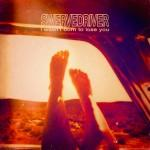

Music Reviews
-

Lightning Bolt Fantasy Empire
Lighting Bolt's 7th album and first foray into a proper studio is certainly about the grooves and riffs first and foremost. But in 15 years, the duo has in no way lost their lust for spleen-bursting noise.
Peter Quinton reviews... -
Death Cab for Cutie Kintsugi
The latest by Death Cab for Cutie is their first without longstanding producer, and band member, Chris Walla.
Juan Edgardo Rodríguez reviews... -
Sufjan Stevens Carrie & Lowell
The prolific singer-songwriter finds inspiration from within in Carrie & Lowell, a deeply understated, but no less devastating, effort that reflects on his troubled relationship with his estranged birth mother.
Juan Edgardo Rodríguez reviews... -

Courtney Barnett Sometimes I Sit and Think, and Sometimes I Just Sit
Melbourne alt-rocker Courtney Barnett sings with a refreshingly strong Aussie accent about indecision, insignificance, and being overwhelmed.
Stephen Wragg reviews... -

Twin Shadow Eclipse
Twin Shadow is now a vehicle for Lewis’s insatiable ego and drive for stadium success, a half-hearted attempt at a No Jacket Required level of mid-career turnaround without the commercial fanfare.
Joseph Moore reviews... -
Liturgy The Ark Work
The latest by contentious "transcendental" black metal outfit is a fascinating train wreck that demands to be heard whilst framed with a complete disregard to others.
Juan Edgardo Rodríguez reviews... -
Ibeyi Ibeyi
Ibeyi's self-titled debut is a creative, beautiful ode to family and ancestry, love and loss, and how all of those elements exist together.
Joe Marvilli follows the twin duo down to the river... -

The Body & Thou You, Whom I Have Always Hated
The Body and Thou combine their efforts for a second time and deliver You, Whom I Have Always Hated. The results are seismic.
Sean Caldwell reviews... -
All We Are All We Are
All We Are wastes some good ideas on their debut in favor of soundscapes that are too subtle to enjoy or even notice.
Joe Marvilli's tries to keep his attention from wandering... -

Swervedriver I Wasn't Born to Lose You
The latest by Swervedriver is a no-frills collection of songs recorded with working-class spirit — an album crafted not after meticulous hours spent on studio headphones, but by four veterans slammed up in a shitty room together armed with battered guitars and analog delay pedals.
Joseph Moore reviews...